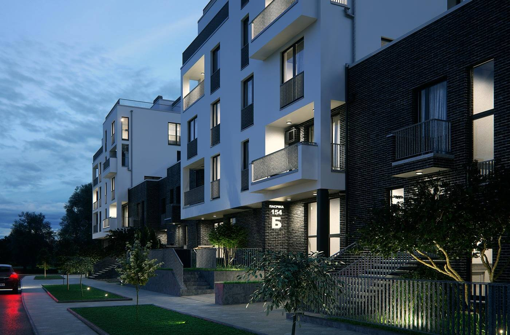

<div class="main_container">
  <div class="container_index">
    <div class="left">
      
    </div>
    <div class="right">
      <h1>Житловий комплекс "Пасічний"</h1>
      <span class="date_slide">Вересень 2016р - Вересень 2018р</span>
      <a href="https://google.com" target="_blank">Офіційна сторнка проекту</a>
      <p class="description">
        Villa Magnolia – сучасний житловий комплекс малої поверховості, в основі якого максимально функціональне
        використання простору, де враховані природні потреби людини у приватності та комфорті. На створення Villa
        Magnolia нас надихнула архітектура Львова 20-30х років минулого століття – вишукані вілли у стилі
        «функціоналізм». Цей стиль став еталоном якісного приватного житла. Саме таку архітектуру ми зустрічаємо в
        сучасній Європі. Villa Magnolia є першим таким проектом для сучасного Львова. Ми вирішили відновити цю традицію
        та запрошуємо Вас стати мешканцями та власниками архітектурної квітки на ім’я Villa Magnolia.
        <br>
        <br>
        Новий житловий комплекс органічно вписано у навколишній ландшафт та завдяки масиву зелені, що його огортає, тут
        чудове свіже повітря.
        <br>
        <br>
        На площі територією 1 га, по периметру, розташовано 6 малоповерхових компактних будинків, які сполучаються
        ефектними 2-поверховими таунхаузами. Така геометрія комплексу формує захищене, вільне від автомобілів, просторе
        та зелене подвір’я. Ми назвали його “Подвір’ям квітучих Магнолій”. Саме ці аристократичні дерева з величними
        біло-рожевими квітками, зустрічатимуть власників нових вілл та їх гостей. Вони є частиною архітектурного задуму,
        візитною карткою Villa Magnolia.
      </p>
    </div>
  </div>
</div>
